My Education
I am studying in Class 9 and learning new things every day.
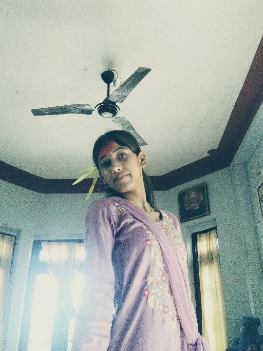
Class 9 Student · Chitwan, Nepal
Welcome to my personal portfolio website. I am a student who enjoys learning new things, improving my skills, and working towards my dreams.
Explore My Website ↓My name is Sandhya Parajuli. I study in Class 9 and I am from Chitwan, Nepal. I study at Annapurna Secondary School, located in Parbatipur, Bharatpur-21, Chitwan. I believe that education, kindness, and hard work can help me achieve my goals. This website is my school computer project made using HTML and CSS.
I am studying in Class 9 and learning new things every day.
My dream is to become a nurse and care for people in need.
I value kindness, patience, responsibility, and hard work.
Some of my favourite photos and memories.
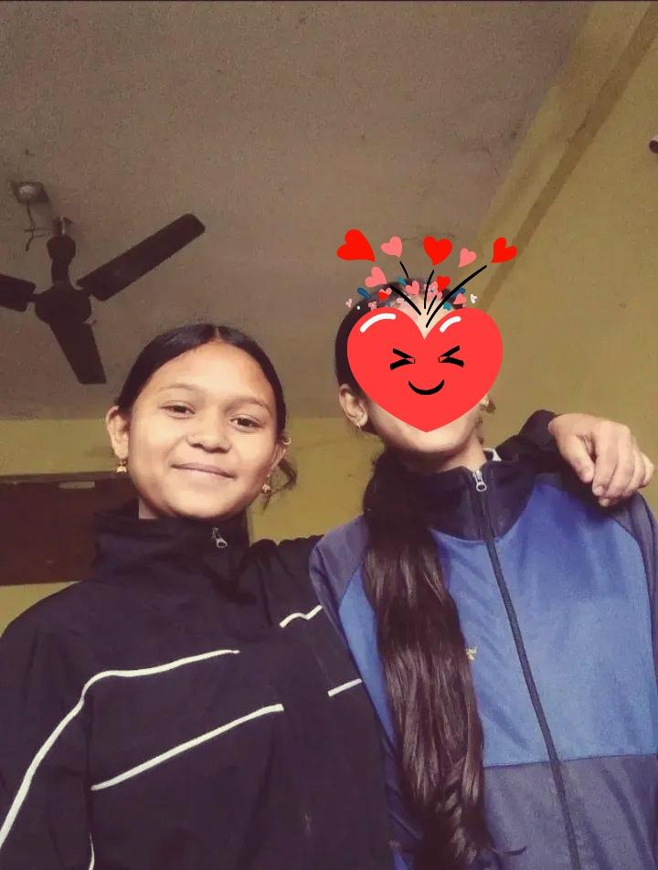
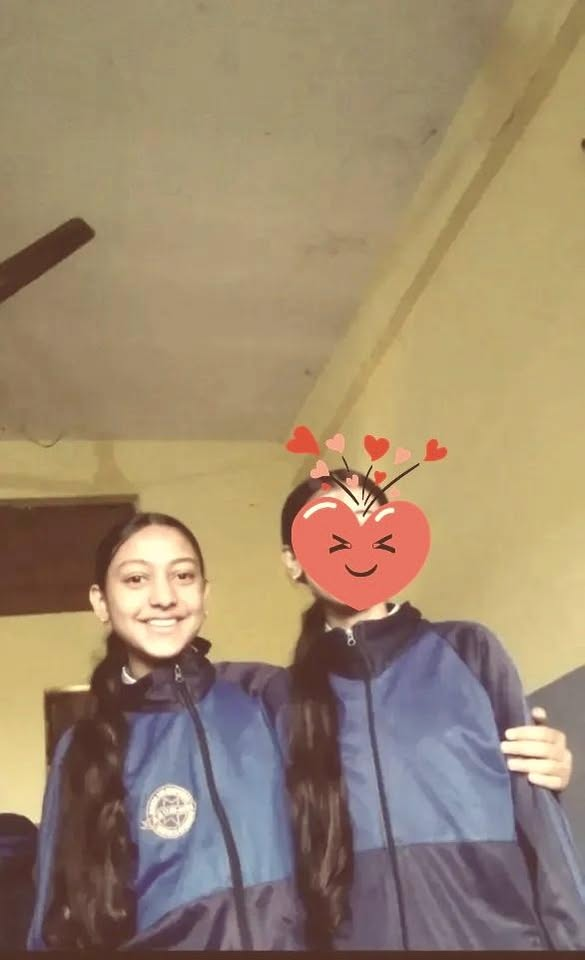
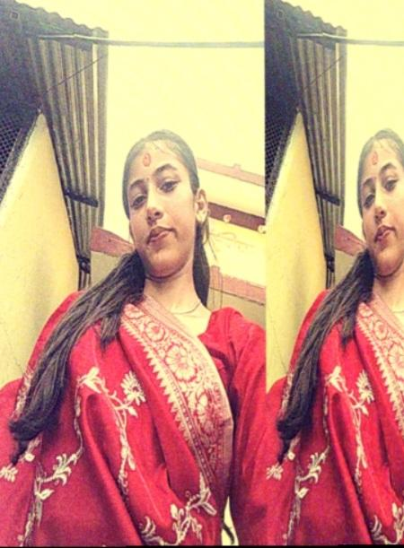
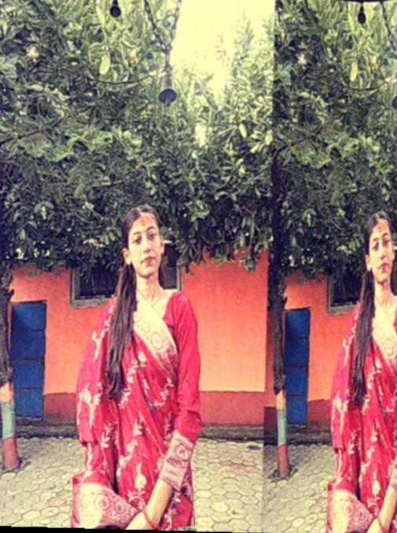
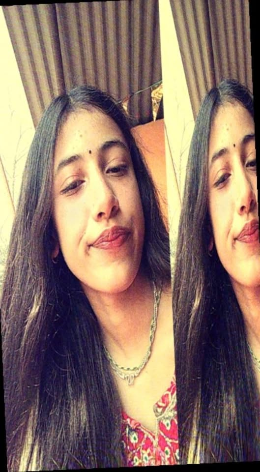
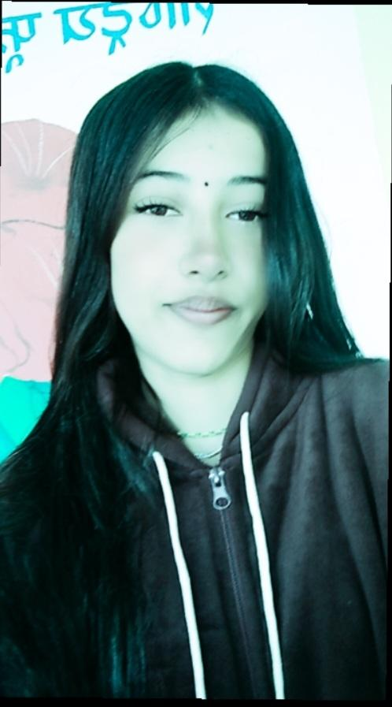
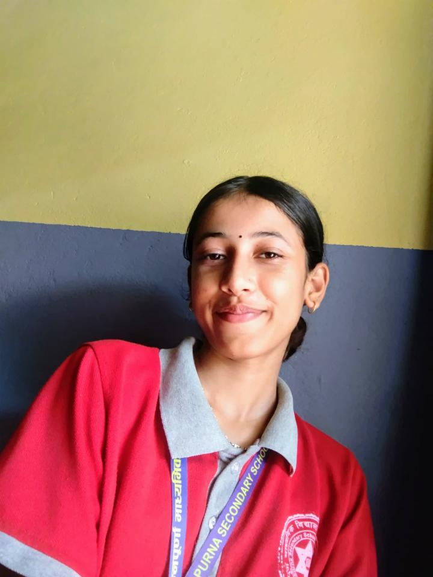
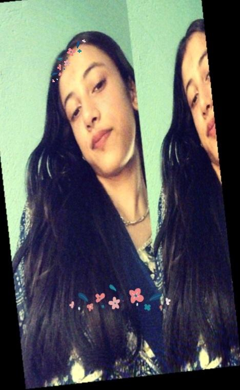
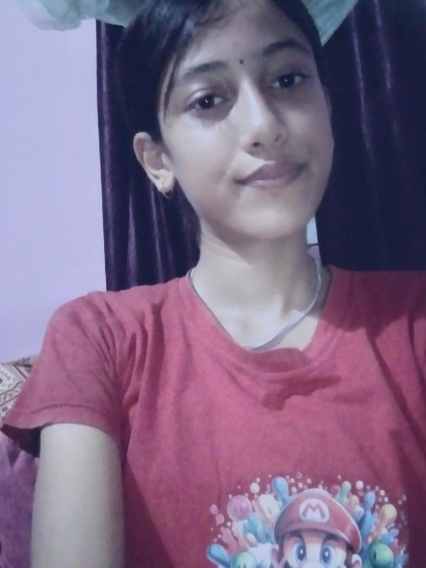
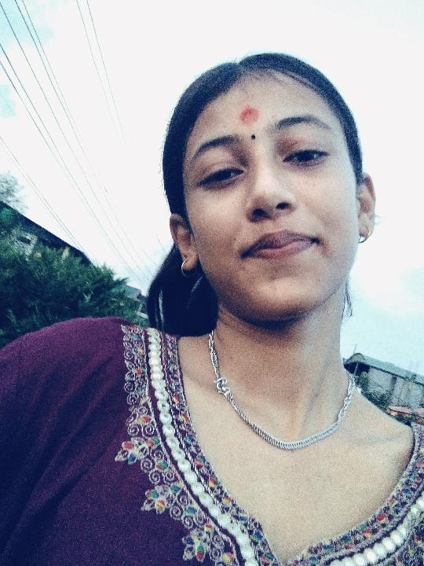
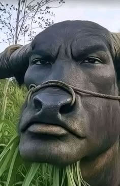